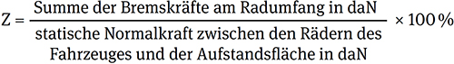

Auszug aus der Richtlinie für die Prüfung der Bremsanlagen von Fahrzeugen bei Hauptuntersuchungen (HU) nach § 29 StVZO (HU-Bremsenrichtlinie) (VkBl. 2012 S. 432) mit Änderung (VkBl. 2014 S. 655)
Die Abbremsung Z ist definiert als:

Bezugsbremskräfte sind Vorgaben der Zentralen Stelle nach Anlage VIIIe StVZO. Jede Bezugsbremskraft setzt sich aus einer Bezugsgröße / einem Eingabewert (den im Radbremszylinder einer Druckluftbremsanlage eingesteuerten Druck oder einer vergleichbaren Kenngröße) und der zugehörigen Bremskraft der Achse zusammen.
Es ist nachzuweisen, dass das Fahrzeug die auf seine zulässige Gesamtmasse bezogene Mindestabbremsung erreicht und darüber hinaus die Radbremsen der einzelnen Achsen hinreichend wirksam sind. Die Prüfung kann dabei unter Beachtung der Randbedingungen nach Nr. 6.2.1 und 6.2.2 in beliebigem Beladungszustand erfolgen.
Vor der Messung der Bremswirkung hat eine kurze Fahrt u. a. zur Konditionierung der Bremsanlage zu erfolgen (Nr. 1 Anlage VIIIa StVZO). Die Konditionierung ist eine gezielte thermische Belastung der Bremsanlage, um unerwünschte Einflüsse auf das Messergebnis zu vermeiden. In der Regel ist die Bremswirkung auf einem Bremsprüfstand im Geschwindigkeitsbereich von 2,5 km/h bis ≤ 7,0 km/h festzustellen.
Dies gilt nicht für Fahrzeuge, bei denen eine Prüfung auf einem Bremsprüfstand aufgrund von fahrwerksgeometrischen oder anderen fahrzeugtechnischen Gründen grundsätzlich nicht möglich ist. Die Bremswirkung dieser Fahrzeuge ist im Fahrversuch mit einem Bremsmessgerät auf ebener, griffiger Fahrbahn festzustellen. In begründeten Fällen (z. B. fachgerechte Unterbringung des Bremsmessgerätes ist wegen der Bauart des Fahrzeugs nicht möglich oder beim Blockieren aller gebremster Räder auf griffiger, trockener Fahrbahn), darf die Beurteilung der Bremswirkung auch ohne schreibendes Bremsmessgerät erfolgen. Dies ist jeweils im Untersuchungsbericht zu dokumentieren.
6.2.1.1 Druckluft- und Hydraulikbremsanlagen
Die Wirksamkeit der Bremsanlage ist mittels Bezugsbremskräften nachzuweisen. Hierfür ist pro Achse das Erreichen bzw. Überschreiten einer Mindestbremskraft in Bezug auf einen entsprechenden Bremsdruck bei kontinuierlich ansteigender Bremskraft zu überprüfen. Ist eine standardisierte Schnittstelle nach Anlage 3 der Richtlinie für Bremsprüfstände (siehe VkBl. 2011 S. 354) verfügbar, ist diese zu verwenden. Bei Fahrzeugen mit einer Druckluft- oder Drucklufthydraulikbremsanlage darf der Blockierdruck nicht unter 1,7 bar liegen, es sei denn, die vorgegebene Mindestbremskraft wird bereits bei einem niedrigeren Druck oder Erreichen des Vorgabewertes der für das Fahrzeug definierten Bezugsgröße nachgewiesen. Andernfalls ist das Fahrzeug mit Beladung oder Beladungssimulation zu prüfen.
Sollte eine Prüfung mittels Bezugsbremskräften aufgrund der technischen Ausführung der Bremsanlage oder des Fahrzeugs oder der Ausführung des Bremsprüfstandes entsprechend der hierfür geltenden Inkrafttretungstermine nicht möglich sein oder stehen Bezugsbremskräfte nicht zur Verfügung, sind im Rahmen der Bremsprüfung mindestens die Bremskräfte nachzuweisen, die für das Erreichen der auf die zulässige Gesamtmasse bezogenen Mindestabbremsung benötigt werden.
Hierzu ist das Fahrzeug ggf. mit Beladung oder Beladungssimulation zu prüfen. Abweichend hiervon kann das Hochrechnungsverfahren nach Anlage 2 der HU-Bremsenrichtlinie zur Anwendung kommen. Dabei muss bei Fahrzeugen mit Druckluft- oder Drucklufthydraulikbremsanlage der Blockierdruck mindestens 30 % des Berechnungsdrucks betragen (ISO 21069-1).
Drucklufthydraulische Bremsanlagen sowie Bremsanlagen mit neuen Technologien sind sinngemäß entsprechend dem Verfahren für Druckluft- und Hydraulikbremsanlagen oder nach Vorgaben / Prüfdaten der Fahrzeughersteller / -importeure zu prüfen.
6.2.1.2 Auflaufbremsanlagen
Prüfung über die Betätigungseinrichtung der Feststellbremsanlage. Es muss die für Feststellbremsanlagen angegebene Mindestabbremsung oder die Blockiergrenze erreicht werden.
Führt die Bremsprüfung auf einem Bremsprüfstand nicht zu verwertbaren Messergebnissen, muss eine Prüfung im Fahrversuch erfolgen. Die Nutzung eines schreibenden Bremsmessgeräts ist hierbei nicht erforderlich. Die Bremsprüfung mittels Fahrversuchs ist im Untersuchungsbericht zu dokumentieren und begründen, unabhängig davon, ob der Fahrversuch aufgrund nicht verwertbarer Messergebnisse auf einem Bremsprüfstand oder aus fahrwerksgeometrischen oder anderen fahrzeugtechnischen Gründen zur Anwendung kommen musste.
6.2.1.3 Feststellbremsanlagen
Es muss die für Feststellbremsanlagen angegebene Mindestabbremsung oder die Blockiergrenze erreicht werden. Die Festhaltewirkung kann auch auf einer entsprechenden Gefällestrecke oder durch Messung der Zugkraft bei einem Zugversuch geprüft werden (gilt nicht für Feststellbremsanlagen, die als Hilfsbremsanlage ausgeführt sind); dies muss in der Prüfliste entsprechend dokumentiert und begründet werden.
6.2.2.1 Ermittlung der Abbremsung von Kraftfahrzeugen
Wenn Messungen mit leerem oder teilbeladenem Fahrzeug durchgeführt werden, muss die vorgeschriebene Mindestabbremsung bei einem eingesteuerten Bremsdruck bzw. einer Betätigungskraft erreicht werden, der / die zum maximalen Wert im gleichen Verhältnis steht wie die Fahrzeugmasse in dem bei der Messung vorhandenen Beladungszustand zur zulässigen Gesamtmasse des Fahrzeugs. Die Abbremsung für das Fahrzeug bei der zulässigen Gesamtmasse kann dann nach folgender Formel berechnet werden, wenn die Bremsdrücke an Vorder- und Hinterachse in den verschiedenen Beladungszuständen jeweils im gleichen Verhältnis zueinanderstehen (ggf. ALB-Regler in Stellung "beladen" bringen oder Anweisungen des Fahrzeugherstellers beachten).

| pz | auf das beladene Fahrzeug bezogener eingesteuerter Bremszylinderdruck in bar – siehe ggf. ALB-Schild |
| pz' | auf das unbeladene Fahrzeug bezogener eingesteuerter Bremszylinderdruck in bar – siehe ggf. ALB-Schild |
| PM' | statische Normalkraft zwischen den Rädern und der Aufstandsfläche des leeren oder teilbeladenen ziehenden Fahrzeugs in daN |
| PMmax | statische Normalkraft zwischen den Rädern des ziehenden Fahrzeugs und der Aufstandsfläche bei zulässiger Gesamtmasse des Fahrzeuges in daN |
| Z | Abbremsung in % |
| ZMbel | Abbremsung des beladenen Kfz in % |
Alternativ kann bei Fahrzeugen mit Druckluftbremsanschluss der Nachweis der Mindestabbremsung durch Erfüllung eines der Zuordnungsbänder (leer oder beladen) erbracht werden.
6.2.2.2 Ermittlung der Abbremsung von Anhängefahrzeugen
Zur Feststellung der Wirkung der Anhänger-Bremsanlage sind Fahrversuche mit dem Zug durchzuführen, wobei nur der Anhänger gebremst wird. Die Abbremsung des Anhängers errechnet sich aus:

| PM | statische Normalkraft zwischen den Rädern des ziehenden Fahrzeugs und der Aufstandsfläche durch die Fahrzeugmasse in daN |
| PR | gesamte statische Normalkraft zwischen den Rädern des Anhängefahrzeugs und der Aufstandsfläche in daN |
| R | Rollwiderstand in % (Für R kann näherungsweise 1,5 % eingesetzt werden) |
| ZR | Abbremsung des Anhängefahrzeugs in % |
| ZR+M | Abbremsung der Fahrzeugkombination nur mit der Bremsanlage des Anhängefahrzeugs in % |
Die Einhaltung der Mindestabbremsung bezogen auf die zulässige Gesamtmasse des Fahrzeugs ist analog zu der Verfahrensweise bei Kraftfahrzeugen nachzuweisen. Bei Starrdeichsel- und Sattelanhängern ist zur Bestimmung der Abbremsung anstelle der zulässigen Gesamtmasse des Fahrzeugs die Summe der zulässigen Achslasten einzusetzen.
Beim Ablesen / Feststellen der Messwerte darf kein Rad blockieren.
Die angegebene Mindestabbremsung muss von den Fahrzeugen erreicht werden. Die Mindestabbremsung gilt als nachgewiesen, wenn die auf Basis der Bremskräfte der Achsen ermittelte Gesamtabbremsung gleich oder größer als der angegebene Wert ist.
Die korrekte Bremskraftverteilung gilt als nachgewiesen, wenn die auf Basis der Bremskräfte der Achsen ermittelte Verteilung der Bremskräfte gleich oder größer als der angegebene Wert ist. Sofern es für den Anteil einer Achsbremskraft an der Gesamtbremskraft weitere Vorgaben gibt, sind diese einzuhalten.
Betriebsbremsanlage
In den oberen 2/3 des Prüfbereichs darf der Unterschied der Bremskräfte an den Rädern einer Achse nicht mehr als 25 % bezogen auf den jeweils höheren Messwert betragen. Dies gilt auch für Anhänger mit Auflaufbremse, deren Betriebsbremsanlage über die Betätigungseinrichtung der Feststellbremsanlage geprüft wird.
Bei automatischer Auswertung muss sichergestellt sein, dass der Messwert zum Zeitpunkt des Blockierens eines Rads nicht in die Bewertung eingeht.
Bei Messungen im Fahrversuch ist die Gleichmäßigkeit der Bremswirkung (Spurhaltung, Eigenlenkbewegungen, Blockierverhalten) einzuschätzen; ein übermäßiges Abweichen von der Fahrspur ist unzulässig.
Feststellbremsanlage
Die Feststellbremsanlage muss auf beiden Seiten einer Achse wirken. Bei Kraftfahrzeugen, bei denen die Feststellbremsanlage während der Fahrt betätigt werden kann und bei Anhängern darf dabei die Differenz der Bremskräfte im oberen Bereich unmittelbar vor der Blockiergrenze nicht mehr als 50 %, bezogen auf den jeweils höheren Wert, bei anderen Kraftfahrzeugen nicht mehr als 95 % betragen.
Die Einhaltung dieser Bedingungen ist bei Prüfung auf dem Bremsprüfstand achsweise wie folgt zu überprüfen:

Die Bestimmungen 6.1, 6.2.1.1, 6.2.2.1 und 6.3 gelten für Fahrzeuge mit einer Erstzulassung ab dem 28. Juli 2010. Sie sind ebenfalls für Fahrzeuge anzuwenden, die vor diesem Stichtag in Verkehr gekommen sind, sofern die hierfür erforderlichen Bezugsbremskräfte vorliegen. Andernfalls ist die geforderte – auf die zulässige Gesamtmasse des Fahrzeugs bezogene – Mindestabbremsung mittels der Summe der gemessenen Bremskräfte nachzuweisen. Können die hierfür erforderlichen Bremskräfte aufgrund der Konstruktion des Fahrzeugs, der Ausführung der Bremsanlage, eines ungünstigen "Last-Leerverhältnisses" oder des Beladungszustands und ein dadurch bedingtes vorzeitiges Blockieren der Räder nicht erreicht werden, ist wie folgt zu verfahren:
Die erforderliche Mindestabbremsung gilt ebenfalls als nachgewiesen, wenn
Im Zweifelsfall muss der Nachweis der erforderlichen Mindestabbremsung im beladenen / teilbeladenen Zustand nachgewiesen werden.
Die geforderte Mindestabbremsung ist mittels der Summe der gemessenen Bremskräfte nachzuweisen. Kann die auf die zulässige Gesamtmasse des Fahrzeugs bezogene Mindestabbremsung infolge des Beladungszustandes und damit einhergehender vorzeitig blockierender Räder nicht nachgewiesen werden, darf der Nachweis auch über das Hochrechnungsverfahren (Einpunkt-Hochrechnung) nach Anlage 2 der HU-Bremsenrichtlinie erfolgen. Dabei muss der Blockierdruck an allen Achsen mindestens 1,7 bar betragen.
Die Beurteilung der Bremskraftverteilung bei Fahrzeugen mit einer Erstzulassung vor dem 28. Juli 2010, für die keine Bezugsbremskräfte vorliegen, ist bei Auffälligkeiten als Ergänzungsprüfung im sachverständigen / sachkundigen Ermessen durchzuführen und zu bewerten.
Kann die auf die zulässige Gesamtmasse des Fahrzeugs bezogene mittlere Vollverzögerung bei Fahrzeugen, die nach den Verfahren gemäß 6.2.2 geprüft werden müssen und die vor dem 28. Juli 2010 erstmals zugelassen wurden, aufgrund eines ungünstigen "Last-Leerverhältnisses" oder des Beladungszustands und ein dadurch bedingtes vorzeitiges Blockieren der Räder nicht nachgewiesen werden, darf ausnahmsweise im sachverständigen / sachkundigen Ermessen und unter Zugrundelegung einer zulässigen Betätigungskraft, mit der die gemessene mittlere Vollverzögerung erreicht wurde, die zum Blockieren einer Achse geführt hat, darauf geschlossen werden, dass die vorgegebene Mindestabbremsung im beladenen Zustand erreicht werden würde. Voraussetzung ist, dass sich die Bremsanlage in einem einwandfreien Zustand befindet.